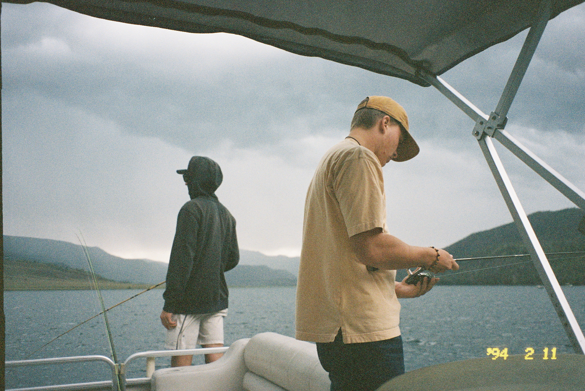

The "Hook" of Fly Fishing
Why Fly Fishing?
Fly fishing is one part sport, one part science, and one part meditation. Unlike conventional fishing, the fly itself weighs almost nothing — you cast the weight of the line, relying on timing and technique rather than brute force. Western rivers like the Green, the Provo, and the Madison have shaped generations of anglers who learned to slow down, read current seams, and think like a trout. That patience is half the point. The quiet thrill of finally catching an elusive trout is the other.
